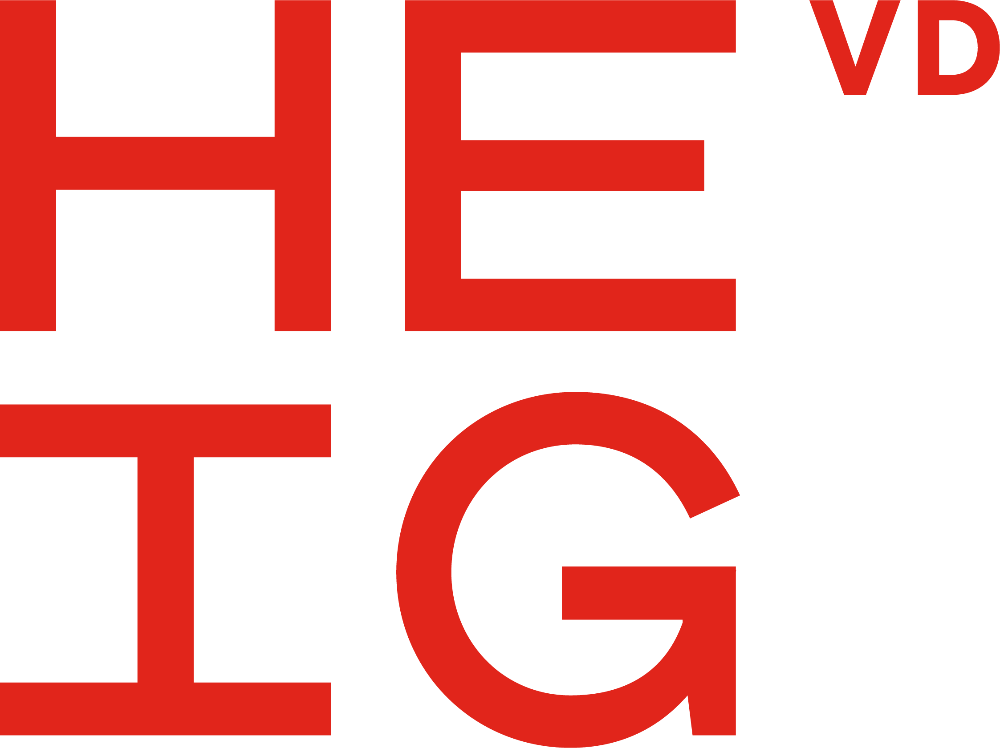

Bienvenue sur SOS-CH
Sélectionnez un point, et vous verrez à quelle distance il se trouve des services d'urgence.

Ajouter un point
1 — Type de service *
2 — Nom du lieu (optionnel)
3 — Cliquez sur la carte *
Cliquez n'importe où sur la carte pour placer le point
Itinéraires calculés
Pompiers
—
Police
—
Hôpital
—
Caserne de pompiers
Poste de police
Hôpital
Numéros des services d'urgence
Pompiers : 118
Police : 117
Ambulance : 144
Rega : 1414
Intoxication : 145
Pompiers : 118
Police : 117
Ambulance : 144
Rega : 1414
Intoxication : 145
Reto Lazzeri, Matthias Renaud & Florian Zaccomer